Network Security
约 4307 个字 48 张图片 预计阅读时间 29 分钟
网络安全基础
网络安全基本属性
- 保密性：保证机密信息不被窃取，或窃听者不能了解信息的真实含义
- 完整性：保证数据的一致性，防止数据被非法用户篡改
- 可用性：保证合法用户对信息和资源的正常使用
- 可认证性：能对伪造来源的信息或伪造身份予以鉴别
- 不可依赖性：防止用户抵赖曾经的行为和操作
- 可控性：对信息的传播及内容具有控制能力，产品和服务安全可控性
网络安全基本原则
感觉没啥用，但是还是放在这里吧×
- 安全机制经济性原则
- 默认不安全性原则
- 完备检查原则
- 最小授权原则
- 可接受性原则
- 开放设计原则
- 最小公度原则
- 特权分离原则
网络攻击
网络攻击是指用多种技术、方法和手段破坏数据机密性、完整性和系统的可用性、可认证性、不可抵赖性和可控性。
网络安全威胁基本解决方案
- 监视全网络态势
- 解决与系统相关的数据保密问题
- 使用对称和公钥加密，重视密钥管理
- 使用数字签名和安全认证技术
网络攻击与威胁
网络攻击概述
- 被动式攻击
- 窃听 Eavesdropping
- 嗅探 Sniffing
- 主动式攻击
- 网络欺骗 Spoofing
- 干扰与瘫痪 Disruption(DDos)
窃听
窃听指以窥探传输的数据的方式收集信息。通常是在机密性通信链路上不合法地监听私密性的对话。
有线网络与无线网络中的窃听
有线网里的窃听难度更大，因为通常需要物理接入目标网络。而无线网里的窃听难度相对较低，一般只需要处于覆盖范围内即可。
设置网卡为混杂模式就可以监听到网络上的所有的包(经过子网的)，混杂模式一般用于检测网络连接问题。
以太网中常用的监听方式
- 监听目标的端口
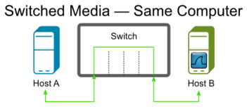 - 中间人（网桥）方式
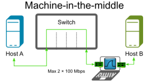 - 集线器方式
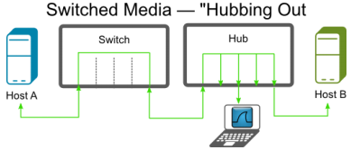 - 集线器+监听端口方式
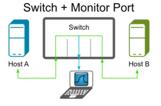 - 集线器+分流器（TAP）方式
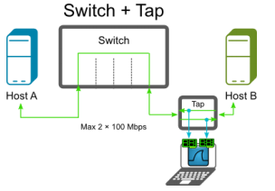 - MAC泛洪方式
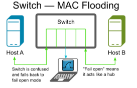
嗅探
嗅探指捕获网络中传输的包，也就是监听流量(不管是以自己为目的地还是以他人为目的地)，同样分为有线和无线两种模式。
嗅探既可以用来攻击，也可以用来防御。
嗅探所需工具
- 硬件：对于有线局域网，通常需要支持混杂模式的网卡；对于无线网络，专用设备居多，比如高功率天线可以增加嗅探距离。
- 软件：最常用的比如Wireshark等。
嗅探用途
嗅探可以用于流量分析、性能分析、入侵检测以及信息窃取等。
嗅探工作原理
正常模式下每个网络设备拥有唯一硬件地址，只会接收以该地址为目的地址的包。但是在嗅探模式下，网卡可以接收其收到的所有数据包，捕获到网络上所有的报文和帧。
利用嗅探开展攻击有时需要主动攻击，比如ARP欺骗(毒化)和MAC泛洪。
ARP攻击
ARP缓存
ARP缓存中保存网络中各个电脑的IP地址和MAC地址的对照关系，每收到ARP的应答包，更新ARP缓存中对应的信息
(某些)主机收到一个ARP的应答包后，不验证自己是否发送过这个ARP请求
两种可能的攻击：
- 对路由器ARP表的欺骗
- 对局域网内PC的网关欺骗
ARP欺骗：毒化
- 使ARP缓存中毒
- 进行中间人攻击
- 使所有从目标主机传出的流量传输到攻击者的主机
方法：伪造ARP回复，对整个网络欺骗
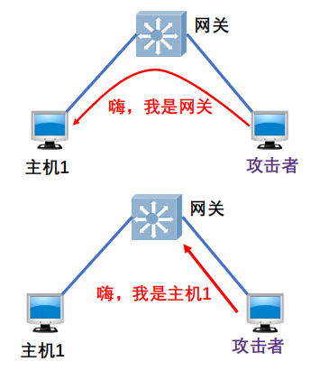
中间人攻击
重定向受害者的流量传送给攻击者
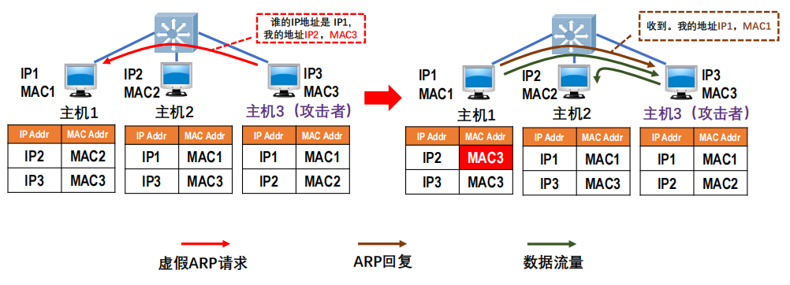
主机1中的IP2的MAC地址被攻击了，变成了攻击者的IP地址。此时如果主机1想要向主机2发送数据，都会发送到攻击者那里，并且主机1不会有察觉。
劫持被攻击主机的网关
将发给网关的数据重定向到攻击者的机器
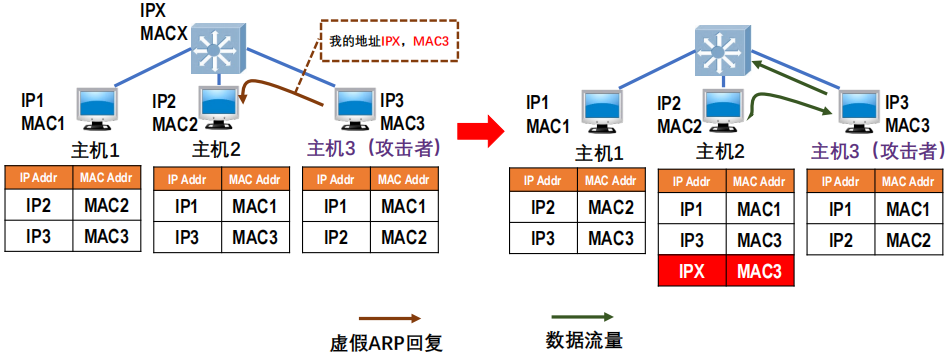
广播欺骗
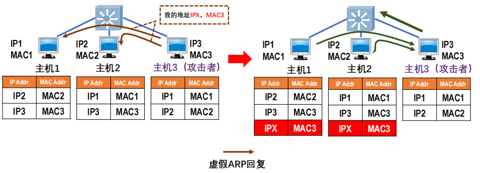
DDos攻击
拒绝服务攻击(Deny of Service)
利用不同主机同时向服务器发送大量请求来消耗服务器的资源
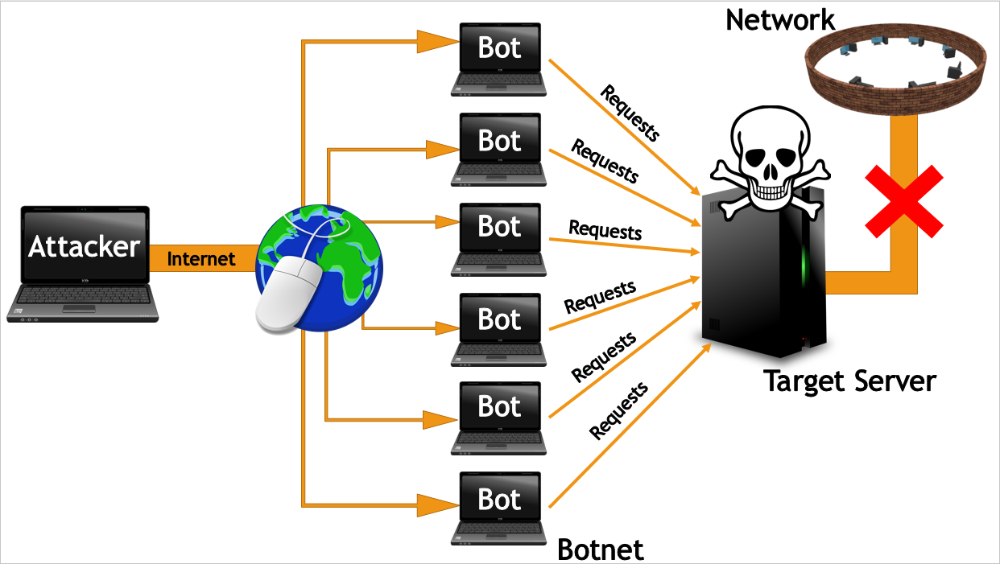
SYN Floods
攻击者向服务器发送大量的SYN包，此时服务器会给这个SYN包发送一定的资源来准备建立连接，处于半连接状态，但是此时攻击者不会给服务器发送ACK包，所以会造成大量的服务器资源占用。
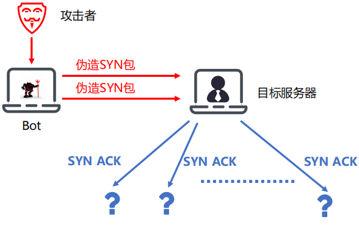
Dos攻击的关键
存在问题：服务器分配资源等待客户端响应
解决方式：避免保持状态(使用cookie)
放大攻击
原理：请求所需的包很少，但是服务器端响应需要很多包，可用于放大Dos攻击效果(利用服务器攻击别的服务器)
攻击方式：(1)伪造报文的源地址 (2)将源地址设为攻击目标的IP地址 (3)服务器将大量响应报文发送给目标
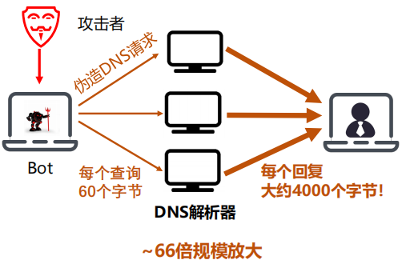
MAC Flooding
- 攻击者对交换机发送很多非法的、包含不同源MAC地址的封包
- 交换机会把所有这些MAC地址记录到自己 的CAM(Content Addressable Memory) 表之中。
- 当这些记录超过交换机所能承载的内存的时候，MAC flooding的效果就达成了。
- 这时，交换机就变成了集线器，对所有信息进行无定向广播。
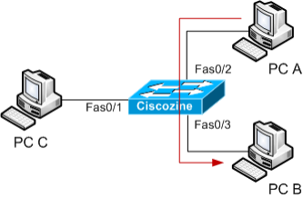 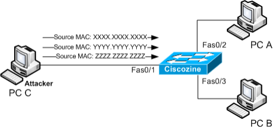 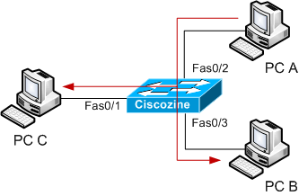
Mirai僵尸网络
使用物联网设备作为僵尸机器
APT攻击
震网病毒
[伊朗核电站事件]震网的传播及发作通道：USB摆渡+基于漏洞的横向移动(利用USB植入病毒到单台主机中，然后病毒慢慢扩散)
安全机制与手段
密码学
Kerckhoffs 原则
即使密码系统的任何细节已为人悉知，只要密钥(key)未泄漏，它也应是安全的。也就是说，要保密的是密钥，而不是加密细节。
加密系统概念图
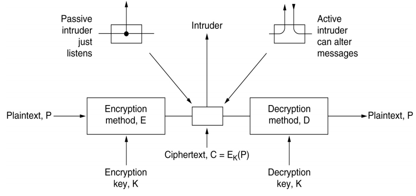
- 加密和解密
- 加密：\(E_k(P)=C\)
- 解密：\(D_k(C)=D_k(E_k(P))=P\)
- 三种不同的攻击能力
- 仅仅知道密文
- 知道密文以及对应的明文
- 可以任意的给加密系统传递明文并且接收到对应的密文(控制加密系统)
Substitution Ciphers
简单的字母替换，比如凯撒密码(字母表向右移动3位)
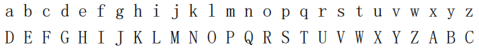
将字母排序变成键盘排序或者是其他随机排序方式
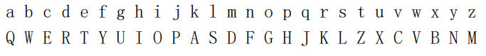
替换密钥的解决方式
- 根据字母出现的频率判断(频率分析法)
- 进行整个单次的频率分析
- 寻找密文中可能存在的特定的词(涉及经济领域的寻找financial)
Transposition Ciphers
位置的改变，也就是打乱顺序
随机选择一个单词，根据单词字字母出现的顺序进行排序，然后将原文进行填充，最后生成密文
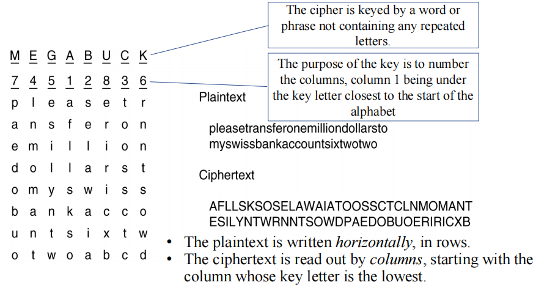
One-Time Pads
选择一串随机数，和明文进行异或操作生成密文。
现代密码学
对称密钥
Feistel结构—对合密码/乘积密码
- Feistel网络的实现与以下参数和特性有关
- 分组大小：分组越大则安全性越高，但加密速度就越慢。
- 密钥大小：密钥越长则安全性越高，但加密速度就越慢。
- 轮数：单轮结构远不足以保证安全性，多轮结构可提供足够的安全性。
- 子密钥产生算法：该算法的复杂性越大，则密码分析的困难性就越大。
- 轮函数：轮函数的复杂性越大，密码分析的困难性也越大。
Feistel网络直接启发了DES对称加密算法
DES(Data Encryption Standard)
对称密钥，密钥长度56bit，校验码8bit
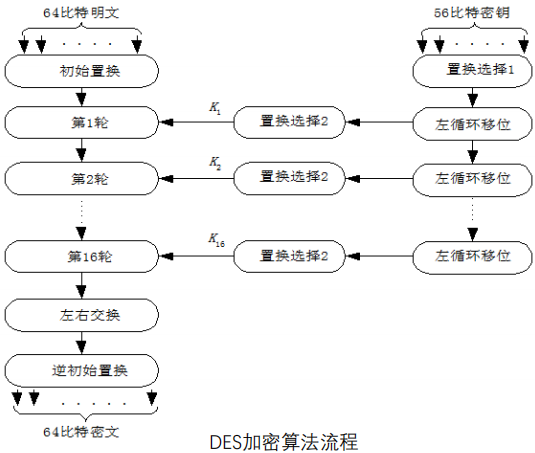
一共加密了16轮(需要记住)
DES补丁拓展
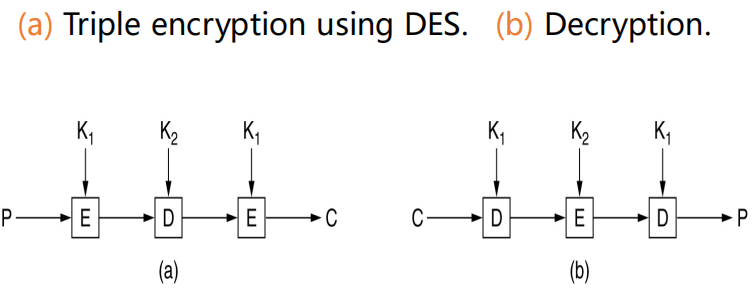
用两个key做三次的原因是为了兼容以前常规的DES，如果前两次的key相同，那么相当于只做了一次DES
AES
对称密钥，密钥长度128bit、192bit或256bit
Cipher Modes
不同块之间的加密，因为前面的加密算法只是块内的加密，可以整个块进行替换来保证密文依然是有效的。
ECB
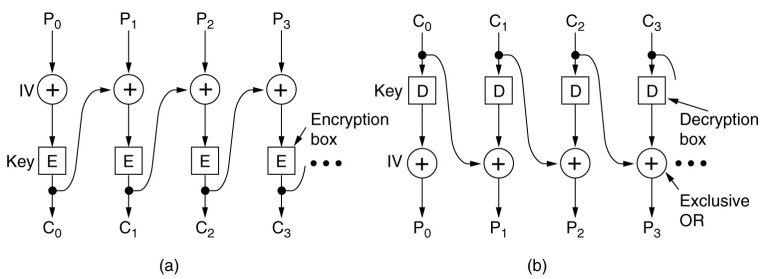
每一个块的加密都和前一个块相关，但是此时的解密效率会有所降低。如果改成基于字节的加密(Cipher Feedback Mode)，效率会提高很多。
对称密钥存在的问题
密钥的分发与管理存在困难，并且不支持两个没有共享过密钥的主体进行加密通信
非对称密钥
使用公钥进行加密，私钥进行解密。
RSA
原理：将两个大素数相乘十分容易，但是想要对其乘积进行素因数分解却极其困难(没有办法通过公钥计算私钥)
RSA安全性：穷举攻击、数学攻击、计时攻击、选择密文攻击
椭圆曲线密码ECC
属于非对称密钥(需要记住)
D-H算法
D-H协议用于安全协商密钥
- 不能用于交换确定消息
- 可用于建立共享的密钥
- 仅有通信双方知道
数字签名与报文完整性
数字签名=公钥加密的逆应用=私钥运算+公钥验证
公钥加密的特点：速度慢。对明文数字签名也是慢。
因为公私钥体系的计算较慢，所以一半用来验证或者是实现对称密钥的分发，一般文件的加密还是使用对称密钥来实现
数字签名一般应具有的性质
- 签名应当是可信的
- 签名应当是不可伪造的
- 签名应当是不可重用的
- 签名的文件应当是不可改变的
- 签名应当是不可抵赖的
密码散列函数(HASH)
可以用于确认传输的数据是否发生错误
单向散列函数能够辨别出“篡改”，但无法辨别出“伪装”，这时就需要进行认证
消息认证码(Message Authentication Code MAC)
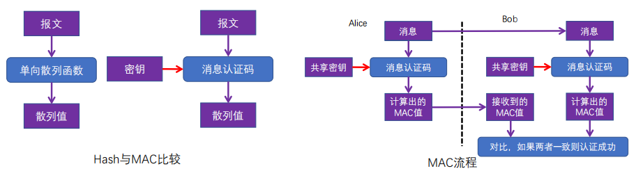
但是直接的MAC并不能解决第三方证明与否认的问题
HMAC (Hash MAC)
HMAC (Hash MAC)是一种使用单向散列函数来构造消息认证码的方法
A发送给B，A先用hash函数生成验证码，然后使用自己的私钥进行签名(加密)。B收到后用对方的公钥解密。

基于数字签名的HMAC
使用私钥对hash后的散列值进行加密
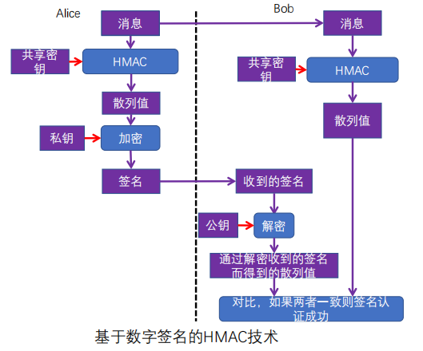
公钥证书PKC(Public-Key Certificate)
PKC由CA(Certification Authority)颁布
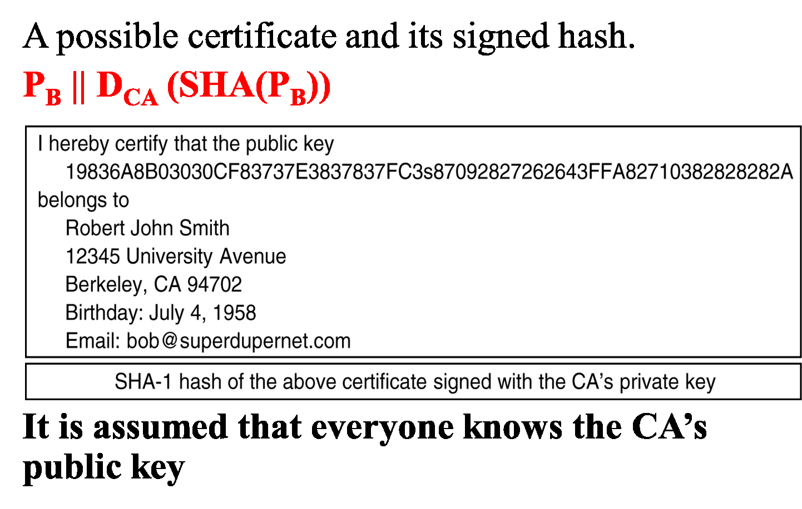
CA会用自己的私钥对hash之后的散列值进行签名
CA也可以具有层次性
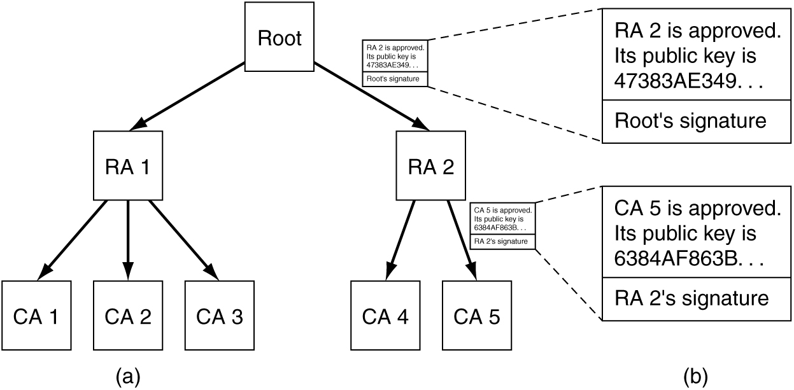
其中Root的地址是所有人都知道的
认证协议
challenge-response protocol 存在漏洞
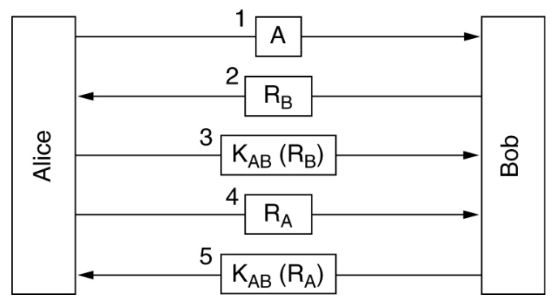
第3步后Bob相信Alice，第5步后Alice相信Bob
存在的问题
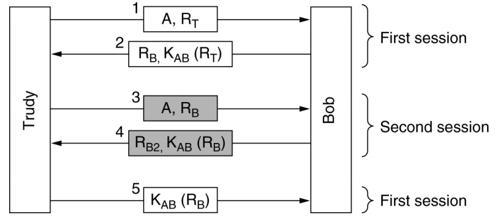
反射攻击(the reflection attack)：Trudy攻击原来Alice和Bob的连接
如何解决：
- 在证明自己的时候同时认证对方
- 使用不同的key
HMAC Hashed Message Authentication Code 正确的
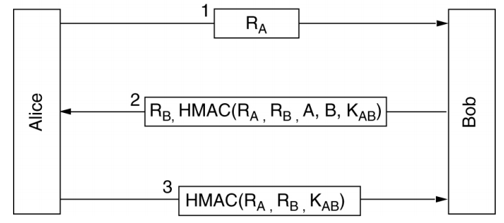
小结
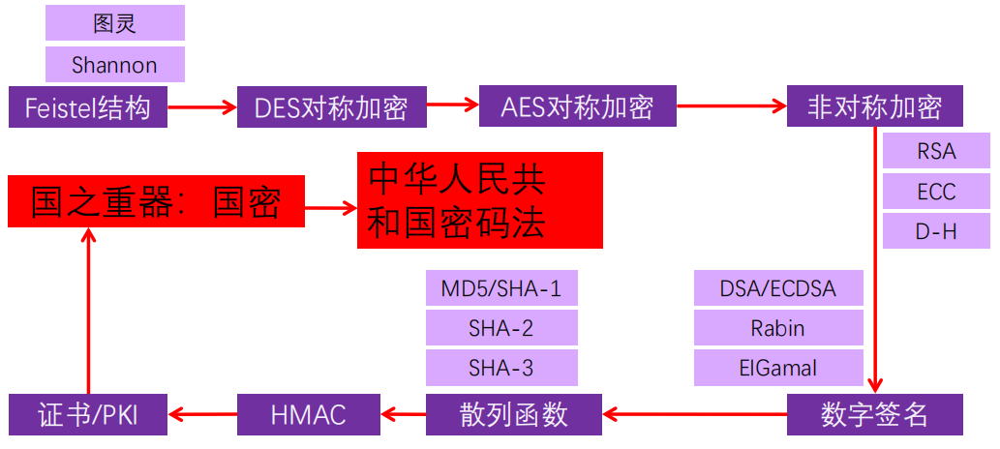
电子邮件安全
安全电子邮件属性
- 保密性：发送方随机生成一个对称密钥，然后将明文使用对称密钥进行加密，然后用接收方的公钥对这个生成的对称密钥进行加密，最后将加密后的邮件和密钥发送给接收方。
- 保密性、完整性和可验证性：发送方先用自己的私钥对邮件的哈希值进行签名，然后进行其他操作，最后将加密后的邮件、加密后的密钥以及签名发送给接收方。
优良保密协议PGP pretty good protocol
- PGP 协议提供了对邮件的加密、鉴别、电子签名和压缩等技术
- PGP 综合应用了现有的 MD5，RSA和 IDEA 等密码算法
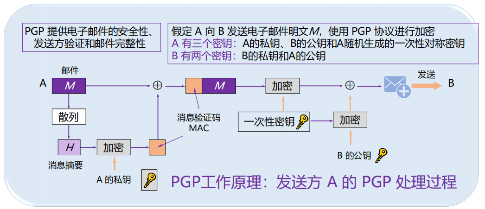
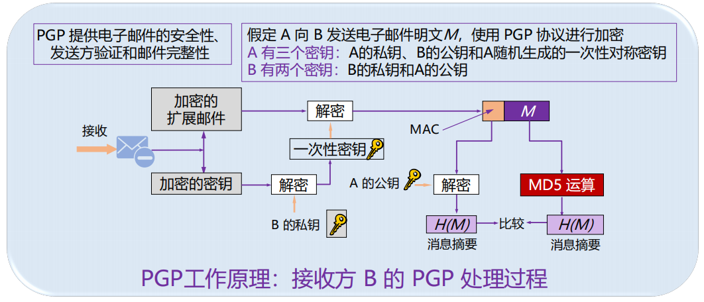
Web安全
常见攻击方式
- SQL注入
- XSS（跨站脚本攻击）
- 点击劫持
- 木马
SQL注入
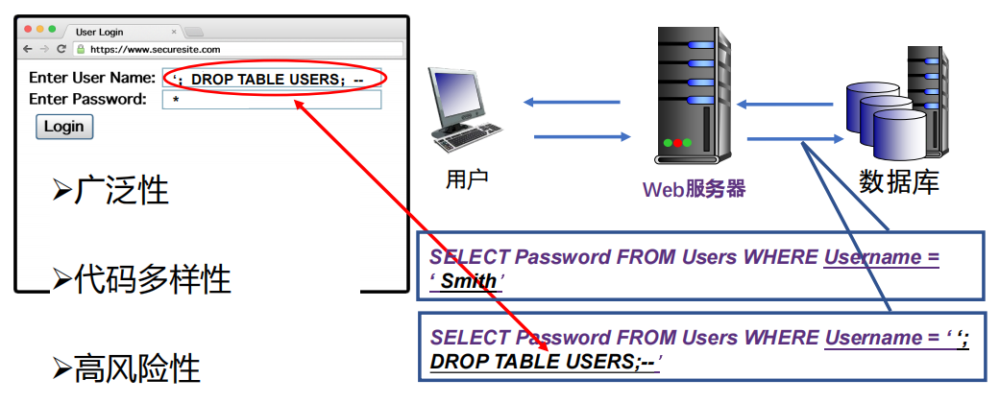
跨站脚本攻击
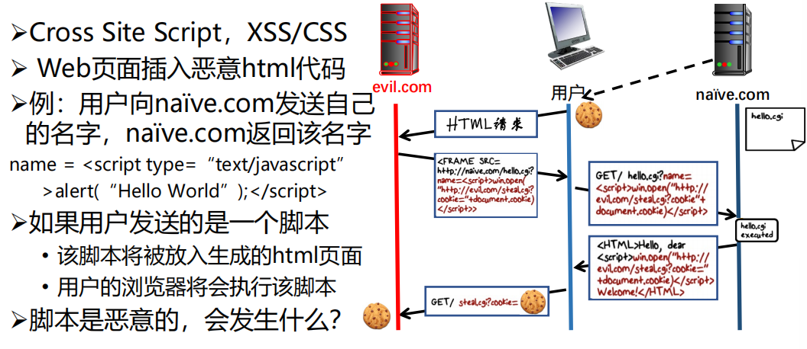
通信安全
传输层安全
- 安全套接字层协议SSL
- 安全传输层协议TLS
- 超文本传输协议安全HTTPS
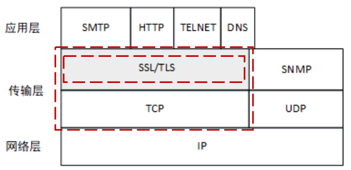
安全套接字层协议SSL
安全套接字层协议SSL是一种在应用层协议(如http、telnet、NNTP、FTP)和TCP/IP之间提供数据安全性分层的机制。它为TCP/IP连接提供数据加密、服务器认证、消息完整性以及可选的客户机认证。

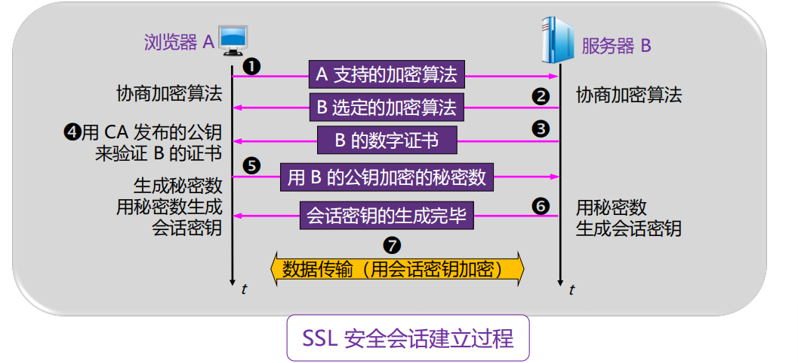
安全传输层协议TLS
在传输层之上广泛部署的安全协议(几乎所有浏览器都支持，web服务器：https 端口443)
提供以下安全保障：机密性(通过对称加密实现)、完整性(通过加密哈希实现)、身份验证(通过公钥加密实现)
建立一个轻量级的TLS(t-tls)需要准备的步骤
- 握手：通信双方使用各自证书和私钥相互认证，交换或创建共享密钥
- 密钥生成：通信双方使用共享密钥生成密钥集
- 数据传输：流数据传输：作为一系列记录的数据(不仅仅是一次性交易)
- 连接关闭：安全关闭连接的特殊消息
TLS: 1.3 密码套件：通过Diffie-Hellman(DH)算法进行密钥交换，HMAC使用SHA加密哈希函数
超文本传输协议安全HTTPS
HTTPS是以安全为目标的HTTP通道，是HTTP的安全版，在HTTP协议应用层和传输层之间加了一层SSL/TSL安全层，HTTPS安全基础是基于SSL/TSL协议
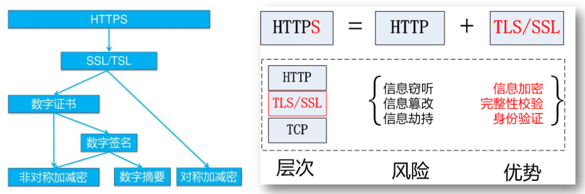
网络层安全
网络层安全 IP Sec
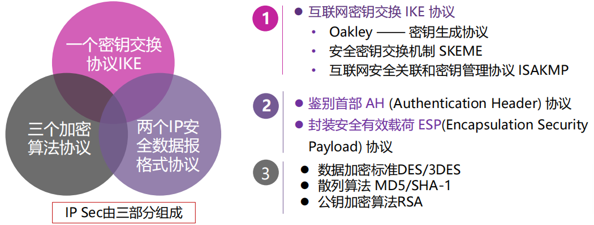
IP安全数据报有两种工作模式：传输模式和隧道模式(用在VPN中)
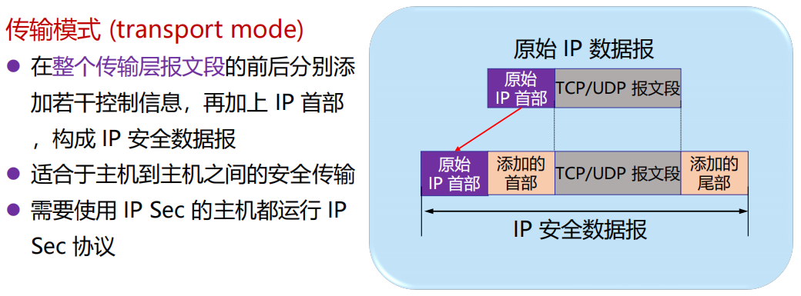
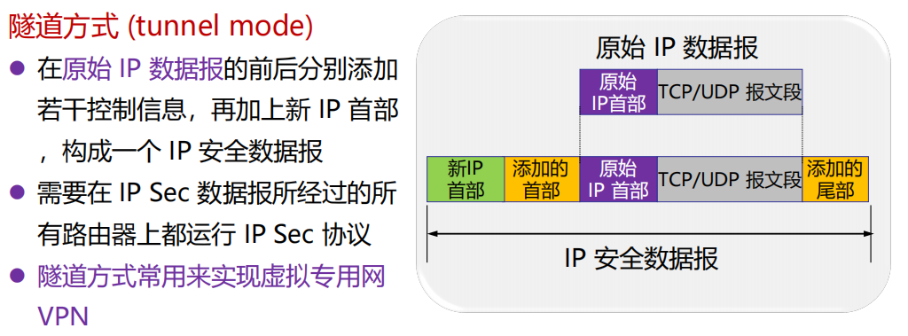
会建立安全关联(SA)：IP是面向无连接的； IP Sec是面向连接的
无线安全
主要就是无线网络的安全
802.11i: 认证和加密
是WiFi中的具体加密和认证协议
- 安全功能发现阶段:
- AP发布自己的状态、可提供的身份验证和加密形式信息
- 移动终端请求特定表单认证(需要加密)
- 尽管移动终端和AP已在交换消息，但设备尚未通过身份验证，因为没有加密密钥
- 生成相互认证和共享对称密钥:
- 认证服务器, 移动终端已经共享了共同密钥(如加入网络密码)
- 认证服务器, 移动终端使用共享对称密钥，随机数(防止重放攻击)，加密哈希(确保消息完整性)相互认证
- 认证服务，移动终端生成对称会话密钥
- 对称共享密钥分配阶段(如用于AES加密)
- 在移动终端和认证服务器之间生成相同的密钥
- AS通知AP共享对称会话
- 移动终端通过AP与远程主机进行加密通信
- 在移动终端和认证服务器之间生成相同的密钥
- AS通知AP共享对称会话
802.11i : WPA 3次握手
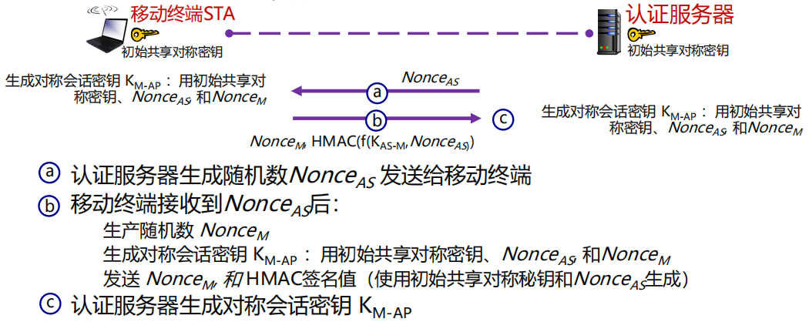
系统与运行安全
- 病毒
- 木马
- 恶意代码
沙盒与隔离
沙盒(sandbox，又译为沙箱)，通过重定向技术，把程序生成和修改的文件，定向到自身文件夹中
蜜罐 Honeypot
本质上是一种对攻击方进行欺骗的技术，通过布置一些作为诱饵的主机、网络服务或者信息，诱使攻击方对它们实施攻击，从而可以对攻击行为进行捕获和分析
安全技术前沿与未来发展
量子加密
量子密码学(Quantum Cryptography)，泛指利用量子力学的特性来加密的科学
量子密钥分发——BB84协议，协议需要4个不同的量子态以及两条信道：经典信道(允许被监听，但不可篡改)，量子信道
BB84协议运行原理(以光量子为例)
发送方
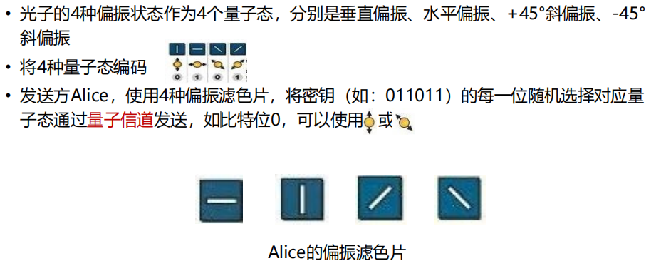
接收方
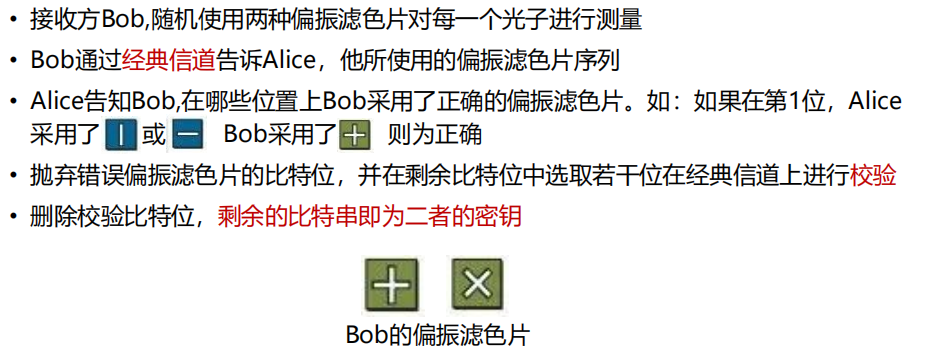
实例
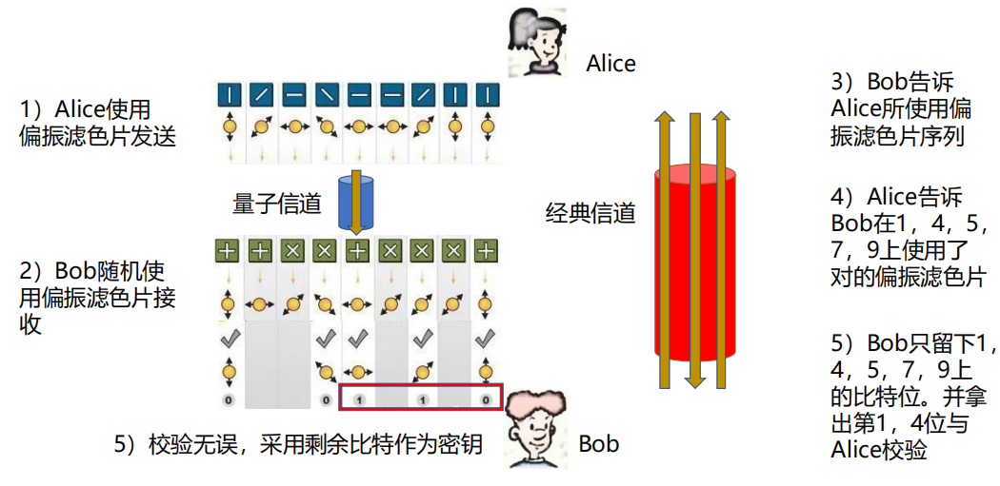
安全性分析
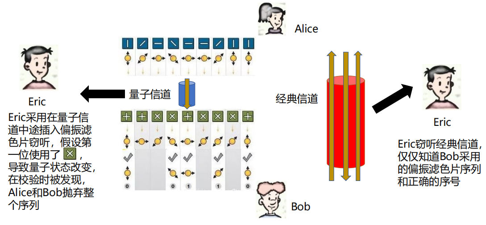
- 通常的做法是通信双方交换很长的光子序列，得到确认的密钥后分段使用奇偶校验核对
- 对于Eric来说，由于无法知晓Alice使用的偏振滤色片序列，则无法无损的复制和存储一整串量子信息
- 一旦被窃听，立即会被密钥分发者发现